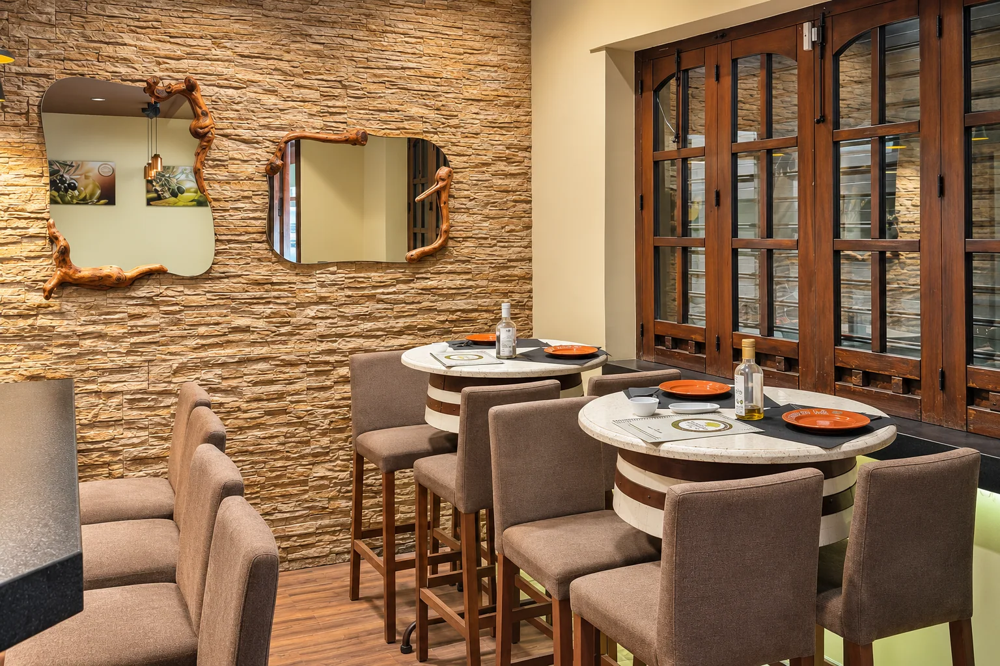

En familia


Familia · Amigos · Encuentros

01 · Reunirse en La Despensa
Hay comidas que se disfrutan más en compañía. Cuéntanos la fecha y cuántos sois para consultar las opciones del restaurante.



02 · Pensar la mesa
Fecha, ocasión y número de personas.
Comenta vuestras preferencias y necesidades.
El restaurante confirmará disponibilidad y condiciones.
03 · El sabor de compartir
Ibéricos de Los Pedroches, platos de cocina española y algo dulce para terminar.
Descubre la carta04 · Alrededor de la mesa
Tu próxima mesa
Calle San Antonio, 17
Fuengirola, Málaga
Consulta nuestros horarios
Terraza y comedor interior. Consulta festivos por teléfono.